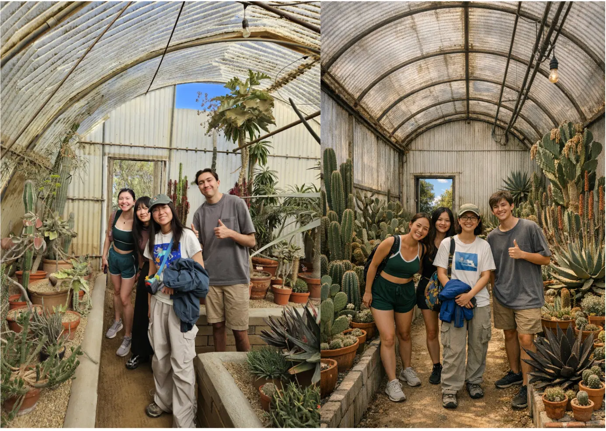

我们很高兴地宣布，Pangram 模型系列中一项全新成员——Pangram Image 的研究预览版现已发布。
Pangram Image 是一款用于检测 AI 生成的图像的模型。它能够检测来自所有主要 AI 图像服务商的图像输出，包括 OpenAI 的 GPT Image、Gemini 的 Nano Banana、Midjourney、FLUX 和 Grok Imagine，以及部分 AI 视频服务商，如 Kling、Seedance、Veo 和 Wan。
“全字母句”图片可在此处查看。
Pangram Image 的性能远超当前最先进的学术和商用 AI 图像检测方法。 在针对5种商用检测器的内部基准测试中，Pangram Image 实现了99.5%的准确率，而排名第二的竞争对手仅为98%。在NTIRE 2026 AI图像挑战赛、Synthbuster和Mirage等外部基准测试中，Pangram Image 始终保持超过99%的AUROC，并以几个百分点的优势领先于竞争对手。
我们理解，从艺术家和创作者的角度来看，AI对真正原创艺术作品的错误指控会造成严重损害，因此我们特别注意防止这种情况在我们的模型中发生。 在 WikiArt 数据集中的 2,000 张图像子集上，我们准确地将每一张图像都归类为人类创作。在 ReLAION 数据集上——这是一个包含 2022 年前互联网图像的多样化数据集，涵盖照片、网页图形、CGI 等内容——Pangram Image 的误报率为 0.16%，约为 625 张中出现 1 张。
与我们的旗舰文本模型一样，我们公开了相关方法论，并积极与科研界开展交流。所有免费和付费的 Pangram 用户均可在网页控制台中使用 Pangram Image，该功能也即将登陆我们的 Chrome 扩展程序及其他集成平台。
虽然我们对这个模型感到无比自豪，但这并非 Pangram Image 的最终形态，未来几周我们将继续对该模型进行迭代，并进一步提升其准确率。我们相信已经取得了巨大进展，并很高兴能向公众分享这个早期模型。在研究预览阶段，Pangram Image API 仅限受邀用户使用。如果您有兴趣在我们快速迭代该模型的过程中与我们合作，请联系我们。
为什么是现在？
人工智能生成的图像已经变得极其逼真。过去，人们可以通过数手指或寻找变形的文字来识别人工智能生成的图像。如今，人工智能生成的图像能够按照指令进行创作，其逼真程度已达到前所未有的水平。
此外，由人工智能生成的视觉内容也越来越常见。在网上，从《水果爱情岛》的TikTok视频到人工智能生成的伊朗战争视频，随处可见此类内容。我们听说有人利用人工智能在餐碗的照片中添加虫子，以此骗取外卖退款。甚至在菜单和标牌上，也能看到明显由人工智能生成的视觉内容。
就像文本一样，并非所有人工智能生成的图像都具有危害性。但在许多情况下，我们确实需要弄清楚真相。近几个月来，曾有一张米奇·麦康奈尔在医院的图片，人们猜测那是人工智能生成的（其实并非如此）。社交媒体上还流传着泰勒·斯威夫特婚礼的人工智能生成照片。甚至有一张人工智能生成的图像入围了一项大型摄影比赛的决赛。
与文本不同，目前正大力推进相关工作，以确保能够追溯图像和视频的来源。 诸如 SynthID和C2PA元数据以及图像隐形水印等技术，旨在识别真实图像和AI生成图像的来源链。遗憾的是，这些水印很容易被能够逆向工程水印并剥离元数据的工具所绕过。此外，尽管OpenAI和谷歌都采用了SynthID技术，但其他AI图像提供商并未采用，这意味着仅凭水印，永远无法完全确信缺乏元数据的图像来源的真实性。
图像检测功能
我们训练了图像模型，使其能够识别来自多种AI图像生成器的图像，包括OpenAI的GPT Image、Gemini的Nano Banana、FLUX、Midjourney和Grok Imagine。该模型还能识别来自Kling、Seedance、Veo和Wan等AI视频生成器的视频帧。
在大多数情况下，由人工智能编辑的图片会被我们的模型标记为“完全由人工智能生成”，这是因为现代图像生成工具即使在进行微小编辑时，也会重新生成整张图片。
我们还可以通过热力图功能检测混合图像，该功能会显示图像中哪些部分被标记为AI生成。在内部测试中，我们发现该功能对于检测包含部分AI元素但并非完全由AI生成的截图或现实世界照片非常有用。我们认为，分享这些热力图信息有助于用户更好地理解我们的模型，因此我们已将该热力图直接展示在仪表盘中。
在此次初步研究预览中，某些类别的图像仍不在研究范围内。目前，我们无法处理分辨率低于 512×512 像素的图像，因为这些较小尺寸的图像中可供模型使用的信息量大幅减少。此外，由于本次初始版本主要针对更常见的消费级图像生成工具，因此我们尚无法可靠地检测深度伪造（deepfakes）和人脸替换内容。
出于安全考虑，目前我们也无法处理被我们的审核系统标记为包含不适合工作场所（NSFW）图像的内容。随着我们构建更多安全控制措施并结束研究预览阶段，未来我们将能够取消这一限制。
我们是如何构建它的
建筑
我们的模型基于业界标准的 DINOv3 架构。DINOv3 是一个功能强大的通用计算机视觉表示模型，它将图像表示为向量，也称为嵌入或特征：即一组数字，以压缩格式编码了图像中的所有视觉信息。
这些嵌入向量功能强大，包含了以极高精度解决各类计算机视觉任务（如分类、深度估计或分割）所需的所有信息。我们的假设是：鉴于这些嵌入向量的通用性，以及它们在理解图像局部和全局特征方面的优势，它们将成为人工智能图像检测的自然起点。
 DINOv3 提取了适用于分类、检索、主成分分析（PCA）、检测、分割和深度估计的通用图像特征
DINOv3 提取了适用于分类、检索、主成分分析（PCA）、检测、分割和深度估计的通用图像特征
图片来源：Meta Research Blog
这些特征之所以如此强大，得益于一项名为“自监督学习”的长期研究领域的进展。这些特征是由模型通过在大规模数据集上学习图像的通用属性而获得的，而非针对特定任务进行调优。特别是DINO，它采用了一种名为“自蒸馏”的技术，其中“学生”神经网络必须在图像的不同视角和增强变体下，使其输出与“教师”神经网络的输出相匹配。 DINO在训练过程中获取的模式和世界知识，使其比随机初始化一个神经网络并从头开始学习AI图像检测任务要强大得多。
然而，我们发现AI检测不仅仅是一项普通的下游任务。与通常在冻结的DINO特征之上简单训练一个分类头的方法不同，我们采用连续训练，在对AI检测分类头进行微调的同时，也对骨干网络进行全面微调：这样，随着模型在第二阶段训练过程中逐渐理解人类图像与AI生成的图像之间的差异，DINO特征也能随之演进。
训练数据
数据的质量、多样性和规模对任何基础模型都至关重要，Pangram Image 也不例外。我们发现，与我们尝试过的其他任何因素相比，无论是人类生成还是 AI 生成的图像，其具体的数据构成对模型最终准确率的影响最大。
我们曾多次详细介绍过为人工智能文本检测器生成合成数据的系统，我们称之为“合成镜像”。该系统通过提示人工智能模型生成与人类文本非常相似但并非完全相同的文本，从而创建出多样化的AI示例。 该系统将每个AI示例植根于真实的主题、风格、体裁和具体信息之中，并防止模型过度拟合那些与AI写作风格无关的人类文本与AI文本之间的差异。事实上，用于训练文本检测器的AI数据集是纯粹的合成数据：这意味着我们使用大型语言模型（LLM）API自行生成了所有数据。
在“全字母图像”（Pangram Image）项目中，我们仍然采用了合成镜像技术。我们使用一种视觉语言模型（VLM）——即一种也能接受图像作为输入的语言模型——首先为一张现实世界中的图像生成一段极其详细的图注。随后，我们将该图注作为提示词输入到图像生成模型中。有时，生成的图像看起来竟惊人地相似！

一张我们团队及其AI合成镜子的照片
在开发 Pangram Image 的初期，我们面临的一大挑战是：合成镜像生成的图像类型与人们在网上发布的真实 AI 图像的分布不符。我们意识到，我们的合成镜像技术尚不足以模拟网上“真实环境”中那些难以捉摸的 AI 图像分布。在生成 AI 图像时，人们通常会进行裁剪和编辑，而这些操作很难通过模拟来再现。
我们的解决方案最终是在内部合成生成的图像之外，更大程度地依赖从互联网获取的真实世界AI图像。 我们在构建真实世界数据集时严格遵循道德爬取原则，以确保尊重创作者的劳动成果，并避免无意中采集个人数据或创作者不会同意我们使用的数据。此外，我们在训练过程中进行了多层强增强处理，以确保能够捕捉到图像在网络传播过程中所经历的变形、压缩和编辑情况。
原文
增强型
原文
增强型
我们还采用了一种新方法——复合训练，以生成高质量的热力图，从而帮助解读人工智能与人工图像混合的影像。在复合训练中，我们将人工智能生成的图像与人工图像分层叠加，以此训练模型同时理解局部特征和全局特征。这使我们能够在模型中呈现热力图，我们发现这能显著提升用户的信心，并支持对包含人工智能生成的图像的现实世界物体进行扫描。
 将AI生成的图像与人类拍摄的图像进行复合训练，使模型同时学习局部特征和全局特征，从而生成可解释的热力图
将AI生成的图像与人类拍摄的图像进行复合训练，使模型同时学习局部特征和全局特征，从而生成可解释的热力图
评估与测试
全面的评估是我们所有产品战略的关键。针对 Pangram Image，我们创建了大量评估数据集，以衡量我们在不同领域中的性能表现。合乎伦理的数据获取对于我们的使命和公司价值观至关重要：作为这一承诺的一部分，我们与 Pangram 内部及外部的多人合作，收集了由图片所有者捐赠的图像，以支持人工智能图像检测技术的发展。
跨探测器基准测试
我们创建了一个包含1,130张示例图像的内部基准测试集，以便以经济高效的方式对多种商用AI图像检测器进行比较。我们收集了500张已知的人像图像，其中包括100张来自我们首席技术官布拉德利个人iPhone相册的图片，以确保基准测试集中的部分图像此前从未被任何AI图像检测模型见过。
随后，我们请克劳德创建了100条能够反映AI图像生成实际应用场景的提示词，并将这些提示词输入到5个前沿的AI图像生成模型中：Flux 2 Pro、字节跳动Seedream、Gemini 3.1 Flash Image（Nano Banana）、GPT Image以及Riverflow v2。 最后，我们从Midjourney的网站上获取了30张图片（因为他们没有提供API）。
我们报告了针对原始数据和增强数据所得的结果，其中增强数据是将图像缩放至1024×1024分辨率，并将其转换为质量等级为50的JPEG格式。这种图像压缩程度高于大多数实际图像，因此我们认为它能很好地衡量最坏情况下的图像质量。
清理
| 探测器 | 准确性 | FPR | FNR |
|---|---|---|---|
| 全字母句图片 | 100.00% | 0.00% | 0.00% |
| SightEngine | 99.13% | 0.40% | 1.32% |
| Resemble AI | 98.35% | 2.40% | 0.94% |
| 温斯顿人工智能 | 94.27% | 10.60% | 1.13% |
| 是AI还是不是AI | 87.67% | 14.40% | 10.38% |
增强型
| 探测器 | 准确性 | FPR | FNR |
|---|---|---|---|
| 全字母句图片 | 99.03% | 0.40% | 1.51% |
| SightEngine | 97.57% | 0.40% | 4.34% |
| 温斯顿人工智能 | 95.83% | 3.60% | 4.72% |
| Resemble AI | 90.68% | 1.60% | 16.60% |
| 是AI还是不是AI | 84.17% | 10.20% | 21.13% |
假阳性率
为了全面了解我们的FPR表现，我们使用ReLAION数据集中的2022年前图像进行了评估。该数据集源自Common Crawl，后者提供了来自整个网络的高度多样化的图像集。我们筛选出2022年前的图像，以避免受图像生成模型的影响。
| Eval | 图片 | 纯准确率 / FPR |
|---|---|---|
| ReLAION 2022年前版本 | 10,000人 | 99.84% / 0.16% |
向AI视频的推广
为了探究我们是否也能检测到人工智能生成的视频内容，我们还创建了一个由前沿视频生成模型生成的视频输出组成的内部数据集。这些视频是以我们数据集中的真实人物照片为种子生成的。
这些视频帧由Gemini VLM进行标注。我们报告了在9个视频模型上的实验结果：Google Veo 3.1和Veo3.1 Fast、Wan2.7、Grok Image Video、Kling Video O1和3.0 Standard，以及Seedance 2.0和2.0 Fast。
| 视频模特 | N | 检测到“Clean” | 清洁精度 | 检测到Aug | 8月的准确率 |
|---|---|---|---|---|---|
| Grok Imagine 视频 | 276 | 275 | 99.64% | 275 | 99.64% |
| Kling 3.0 Pro | 140 | 139 | 99.29% | 137 | 97.86% |
| Kling 3.0 标准 | 260 | 250 | 96.15% | 245 | 94.23% |
| 克林格视频 O1 | 120 | 114 | 95.00% | 102 | 85.00% |
| Seedance 2.0 | 140 | 140 | 100.00% | 138 | 98.57% |
| Seedance 2.0 快速版 | 216 | 216 | 100.00% | 213 | 98.61% |
| Veo 3.1 | 100 | 99 | 99.00% | 93 | 93.00% |
| Veo 3.1 Fast | 276 | 276 | 100.00% | 274 | 99.28% |
| 万 2.7 | 220 | 220 | 100.00% | 220 | 100.00% |
| 总体而言 | 1,748 | 1,729 | 98.91% | 1,697 | 97.08% |
对真实世界社交媒体AI图像的泛化
这些评估数据的一个来源是我们新开设的 @PangramData 账号。我们要感谢社区帮助我们了解人工智能在现实生活中的应用，并感谢大家抽出时间与我们分享这些发现。 在手动清理数据、剔除超出范围或明显非AI生成的图片后，我们发现，在我们收到的43张图片中，模型仅对其中2张的判定结果与用户提交的图片存在分歧。这对我们而言是一个极其有价值的训练集，因为它让我们深入了解了用户认为属于AI生成的图片类型。
假阴性不一致：
我们模型与社区提交结果之间存在一个假阴性分歧
我们模型与社区提交结果之间存在一个假阴性分歧
第三方基准测试
除了内部评估集外，我们还通过相关第三方基准测试对结果进行了对比。与先前的方法相比，Pangram Image 取得了最先进的水准。不同的基准测试报告了不同的具体指标，例如宏观准确率、mAP 或 AUROC，因此我们根据具体论文计算这些指标，并报告与原文最接近的对比结果。
| 基准测试 | 全字母句结果 | FPR | FNR | 此前最佳 | 此前最佳成绩 |
|---|---|---|---|---|---|
| 社区取证评估 [1] | 97.29% 的宏观准确率；99.70% 的mAP | 0.413% | 6.355% | Ours-384 | 89.3%；98.7% |
| Synthbuster + RAISE-1K [2] | 98.49% 的宏观准确率；99.96% 的mAP | 0.100% | 2.911% | B-Free | 94.9%；98.8% |
| Mirage-Test [3] | 99.66% 的域-宏准确率；99.995% 的mAP | 0.056% | 0.618% | OmniAID-Mirage | 88.39%；96.81% |
| AIGenImages2026 [4] | 99.463% 的准确率；99.943% 的AUROC | 0.537% | 0.537% | RINE | 92.13%；97.75% |
| NTIRE 2026 公开测试 [5] | 99.999% AUROC | 0.500% | 0.000% | MICV | 99.78% AUROC |
Reddit r/IsThisAI 案例研究
在判断现实世界中的图像是否由AI生成方面，Reddit子版块/r/IsThisAI是我们所能获取的最具代表性的社区判断来源之一。这使其成为检验我们模型与人类偏好一致性的绝佳案例研究，并能帮助我们发现模型中的失效模式。 在此案例研究中，我们从该子版块收集了100条帖子。其中，有27条未在子版块内形成明确共识，因此被过滤出评估集。该共识由人工标注员进行判定。
在剩余的73张图片中，有48张被社区投票认定为AI生成，其余25张则被认定为人类创作。Pangram Image在全部25张人类创作样本上与Reddit的判定结果完全一致，并在45张AI生成样本中，有40张被正确判定为AI生成。这符合我们通过校准模型以最大限度降低误报发生概率的政策。
Pangram Image 的下一步计划是什么？
虽然我们认为这是一个非常出色的模型，并对未来充满期待，但我们也深知还有许多工作需要完成。在研究方面，我们知道在对抗性场景下（例如水印被移除，或AI生成的图像在生成后被编辑）性能仍有提升空间。此外，我们计划继续将误报率降至更接近我们文本模型的水平。
在产品方面，预计未来会不断改进。X机器人很快将能够检测AI生成的图片，控制面板也将支持视频输入。最终，我们将把Pangram Image整合到Chrome扩展程序中，这样所有Pangram用户都能在其社交信息流中的图片上获得主动生成的AI标签。
参考文献
-
Park 等，《社区法医分析：利用数千个生成器训练伪造图像检测器》，CVPR 2025。https://huggingface.co/datasets/OwensLab/CommunityForensics-Eval/blob/main/README.md
-
Qin 等，《利用生成器感知原型扩展人工智能生成的图像检测》，CVPR 2026，表 1。https://openaccess.thecvf.com/content/CVPR2026/papers/Qin_Scaling_Up_AI-Generated_Image_Detection_with_Generator-Aware_Prototypes_CVPR_2026_paper.pdf
-
郭等人，《OmniAID：解耦语义与伪像，实现真实环境中通用的人工智能生成图像检测》，https://arxiv.org/pdf/2511.08423
-
Pantsios 等，《用于持续检测人工智能生成图像的自动化真实环境数据采集》，https://arxiv.org/pdf/2605.02567
-
Gushchin 等，《NTIRE 2026 挑战赛：真实环境中鲁棒的人工智能生成图像检测》，https://arxiv.org/pdf/2604.11487
致谢
我们要感谢 Artem Frenk 在研究方面做出的贡献，感谢 Ben Glickenhaus 在工程方面的支持，感谢 Lu Lyu 和 Fanyi Pan 在设计和用户界面方面的贡献，以及感谢 Tianxu Zhou 完成的 Chrome 扩展程序集成工作。

布拉德利是一位人工智能研究员，也是工业领域深度学习产品开发的专家。他最近曾领导生成式人工智能药物发现公司Absci的深度学习研究团队，此前曾是特斯拉Autopilot核心计算机视觉团队的成员。